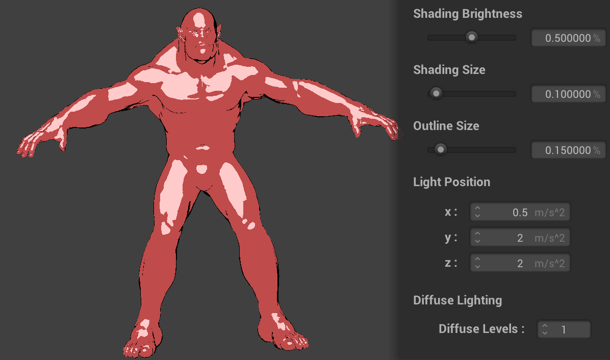
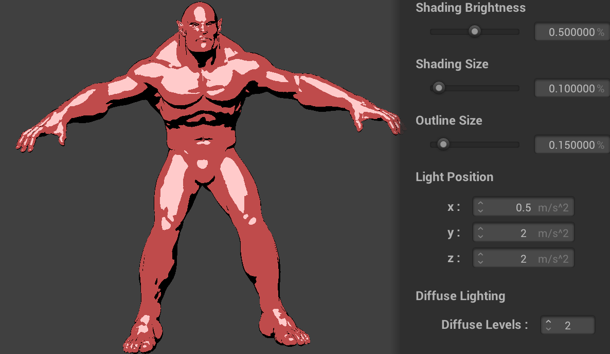
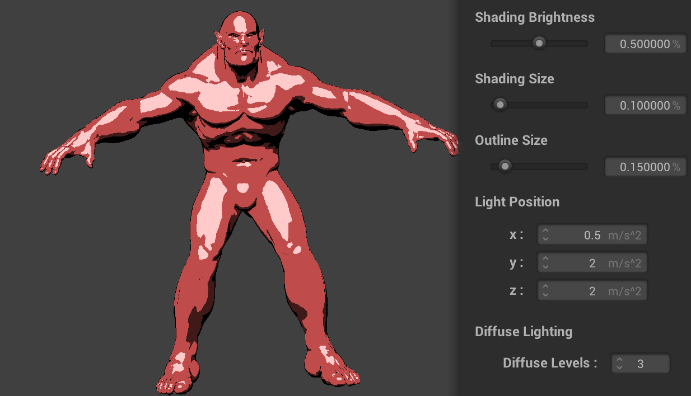
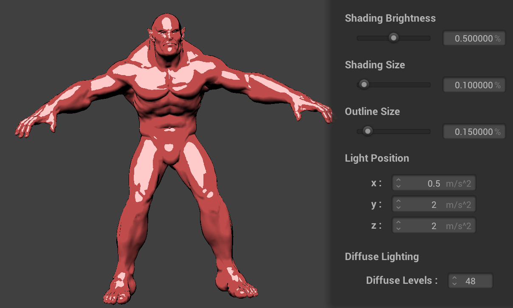

Overview
I decided to work on this project independently given the circumstances of being sheltered in place for COVID-19. For my project, I extrapolated my implementation in project four to include a toon shader, update the GUI to change specific aspects, and create a framework that allows graphics with mesh elements to be rendered with shaders. The ultimate goal was to return graphics such as the cow, bunny, and teapot used in previous tasks with shaders including the custom toon one I have crafted.
Problem Description
For this final project, I combined aspects from all of the previous projects to create unique visualizations that reflect toon-like shading on complex 3D objects we have previously worked with. I wanted to make my project accessible for people with differing graphic expertise by implementing new adjustable GUI parameters to dynamically edit the graphics to fit the user’s desire. My final deliverables show how easily someone can modify my shader and the resultant graphic by simply inputting new values and changing slider values. My implementation reflects a high-quality toon shader with specular highlights, diffuse illumination, and outlines that all together create visually pleasing graphics for abstract and complex objects.
Part 1: Toon Shader
The toon shader I implemented consists of three parts that together create toon-like graphics. More specifically, my shader consists of specular highlights, diffuse illumination, and object outlines. These three shading techniques use Blinn Phong Shaing principles to systematically shade edges and surfaces in regard to the light and camera positions. Together, all aspects of my shader support each other and result in visually pleasing graphics regardless of the designated object.
1. Specular Highlights
To start, I added specular highlights with relation to the chosen color on the color wheel. Essentially, I added the color white multiplied by the designated specular intensity to the chosen color if the interested location on the object was being intersected by the light in relation to the camera position. I checked this condition by calculating the half vector between the camera and the target position, normalizing this vector, completing the dot product with the vertex normal and checking if this value fell between the designated cut off point. Below are the initial results of applying specular shading only to a sphere:
2. Outlines
After adding specular highlights to my shader, I introduced outlines to make a more profound shading that highlights the edges of the object. My implementation of outline detection included interpolating the desired thickness of the edge in relation to the camera direction and the vertex normal. If the dot product between the vertex normal and the camera direction fell within the designated threshold, I modified the outcolor to become black (in later parts of my implementation I allow for the user to select the outline color). Here are images of a sphere with only outlines applied:
3. Diffuse lighting
Lastly, to add more dynamic and adaptable toon like graphics I introduced diffuse lighting to my shading implementation. Diffuse lighting allows for objects to blend their primary color with the outline color in a visually appealing way that considers light positions and the objects geometry. To implement diffuse lighting, I first found the reflection coefficient of the target location by taking the dot product of the light position and the vertex normal to check if the location satisfies a specific diffuse levels conditions. For each diffuse level which I evenly partitioned, I check if the specific location's reflection coefficient fell within the diffuse areas minimum and maximum value. If the specific location did satisfy the conditions, the difference between the primary color and the outline colored was multiplied by the specific diffuse level number and added to the outline color to reflect a transitional color. The final result of this portion are reflected in the sphere below:
All Together
When put together, these three toon shading techniques create visually pleasing graphics that reflect the objects geometry and the lighting it receives. Below are images of the sphere and the sphere with a cloth over it with my final toon shader implementation applied:
Part 2: Introducing Complex Objects
To best show of my shader, I had to expand the objects I could display beyond simple json files such as the sphere, plane and cloth we used in project 4. After hours of research, I determined that I could represent 3D objects such as the bunny, cow and dragon we used in previous projects by using .obj files to create meshes for shading. To simplify, my conversion from .obj file to a framework suitable for the structure used to represent json files, I utilized MIT's Obj loader class that helped create easily accessible object instances from a provided .obj file. Once my designated .obj file was converted to a object class instance I modified code within the cloth simulator to update vetices, normals, and uv coordinates for all of the triangles within the object. Ultimately, updating these values prepared these objects to become shaded with the shaders I implemeted in project 4 and more importantly the toon shader I described above. For your reference, to designate a object file use the -w followed by the path to the file to complex 3d objects. Additionally, I used a dae to obj file converter (linked below) so I could utilize objects I was familiar with. Below are some results of my shader appied to abstract objects objects:

Part 3: Updating GUI
After implementing a fully functioning implementation for toon shading all types of objects, I wanted to provide my users with tools to modify specific parameters for my toon shader. For each of the many parameters I introduced in my toon shader, I inserted a new GUI aspect so the user could dynamically change the shading to meet their desired result. To make space for these new GUI components, I removed all of the simulation components we used in project 4. With this open space, I inserted new modifiable sliders, color wheels, and number inputs all related to the toon shading implementation I described above. Below is an image of the GUI interface I included alongside the original appearance interface:
Component Toggler
The first new GUI aspect I introduced was a component toggler for all three of the toon shading techniques I implemented. These togglers allow for users to easily select which aspect of my toon shading implementation they want to use. I implemented this by adding if statements to each part of my toon shader, each checking if the respective portion was toggled. Below are images of the same object with individual portions toggled:
 Only Specular Highlights
Only Specular Highlights
|
 Only Outline
Only Outline
|
 Only Diffuse Lighting
Only Diffuse Lighting
|
 Full Implementation
Full Implementation
|
Outline Color Wheel
I introduced a second color wheel to further adjust the color of my toon shader. Chaning the color wheel value changes the outline color and the transitional colors for diffuse lighting.
Slider Color Adapters
 Baseline
Baseline
|
 Shade Brightness
Shade Brightness
|
 Shading Size
Shading Size
|
 Outline Size
Outline Size
|
Lighting Position
Diffuse Levels
|

One Diffuse Level
|

Two Diffuse Levels
|
|

Three Diffuse Levels
|

Nearly 50 Diffuse Levels
|
Conclusion
Video